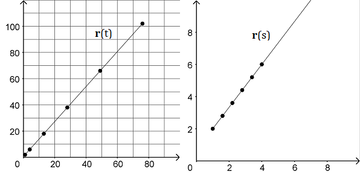

On this page, you will learn to:
- Determine the arc length of curves defined by vector-valued functions.
- Rewrite vector-valued functions using arc length as a parameter.
Back in Calc II, you learned about parametric equations and how we can compute the length of a curve defined by parametric equations. The following video gives a review of how the arc length formula is developed.
Since vector functions are defined as parametric equations, we can apply the same logic to finding the arc length of a vector-valued function.
The arc length of the smooth curve \(\vec{r}(t) = \langle f(t), g(t), h(t) \rangle\) for \(a \le t \le b\) can be computed using the following formula where \(f'\), \(g'\) and \(h'\) are continuous functions are \(\left[ a, b \right] \).
\[L = \int_{a}^{b} \lvert \vec{r}'(t) \rvert dt = \int_{a}^{b} \sqrt{{\left[ f'(t) \right]}^2 + {\left[ g'(t) \right]}^2 + {\left[ h'(t) \right]}^2} dt \]This next video works through an example of finding the arc length of a curve.
Arc Length as a Parameter
Usually, vector functions are parameterized by an arbitrary paremeter \(t\), often in an effort to simplify the expressions in the parameter functions. But it is possible, and sometimes even necessary, to parameterize a vector function by its arc length.
For a smooth curve \(\vec{r}(t)\) for \(t \ge a\), the arc length \(s\) as a function of \(t\) is defined by the following integral.
\[s = s(t) = \int_{a}^{t} \lvert \vec{r}'(u) \rvert du\]For example, the curve \(\vec{r}(t) = \langle 3t^2+1, 4t^2+2 \rangle \) can be parameterized using its arc length as \( \vec{r}(s) = \langle \frac{3}{5}s+1, \frac{4}{5}s+2 \rangle \). A couple graphs of the curve of \(\vec{r}\) are shown below. The left graph illustrates \(\vec{r}(t)\) with points at \(t\) = 0, 1, 2, 3, 4, and 5 while the right graph illustrates \(\vec{r}(s)\) with points at \(s\) = 0, 1, 2, 3, 4, and 5. Notice how the distances between the points of r(t) change as t increases, but the distances between points of r(s) remain the same. This is because the parameterization using \(t\) computes the square of each \(t\)-value, so as \(t\) gets larger, the result is a bigger step between points. However, using the parameterizastion with arc lenght \(s\), the points are exactly 1 unit apart from each other. Using the arc length as the parameter results in a uniform step-size between each point.

The following video gives an example to show how we can change the parameterization of a vector function from any arbitrary \(t\) to the arc length \(s\).